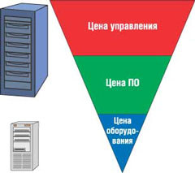
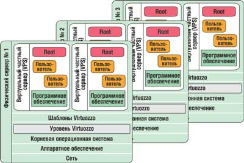
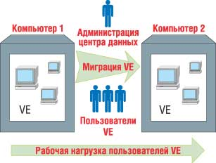
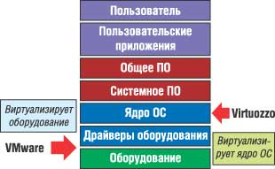
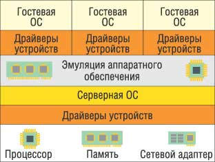
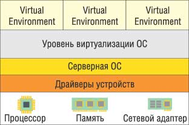
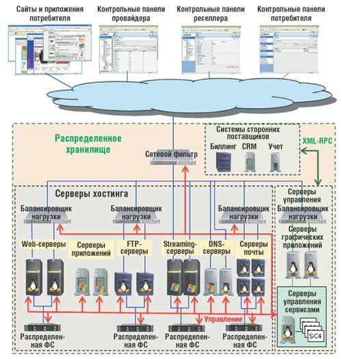

ИТ-инфраструктура современного предприятия
Типичная ИТ-организация сегодня должна уметь управлять сложной гетерогенной средой, состоящей из множества компьютеров на платформе Windows, Linux, Unix и т. д. Массовый переход на использование многоуровневых приложений выявил серьезную проблему - большинство приложений сейчас устанавливается по принципу "одно приложение на один сервер в один отдел" ("принцип 1-1-1"). Более того, развертывание решений на так называемых тонких клиентах, таких, как предоставляемые компанией Citrix или Microsoft (Microsoft Terminal Server), только увеличивает количество выделенных серверов, которыми должен управлять ИТ-отдел. Эта картина порой осложняется ситуативным увеличением количества приложений, необходимых для работы компаний.
С ростом сложности и объема инфраструктуры стоимость управления ею растет буквально по экспоненте. В результате организации получают дорогую, негибкую и сложную инфраструктуру.
В стоимости ИТ-инфраструктуры предприятия сегодня можно выделить три компонента, доли которых весьма сильно различаются (рис. 1).
|  | Рис. 1. "Пирамида" стоимости владения ИТ-инфраструктурой.
|
Стоимость оборудования. Несмотря на развитие аппаратных средств, цена оборудования остается практически одинаковой. Аппаратура становится все более мощной, но объем затрат на нее почти не меняется. Казалось бы, собственно цена оборудования не составляет особой проблемы для предприятий, однако увеличение уровня недогрузки и стоимости обслуживания все же становится все более и более обременительным.
Стоимость ПО. Типичный сервер нуждается в лицензиях и поддержке со стороны производителя ОС и каждого производителя приложений. Обычно общая стоимость ПО превышает стоимость оборудования сервера, на котором оно запущено, более чем в несколько раз.
Цена управления. Эта статья расходов наиболее весома для типичной ИТ-организации. Персонал ИТ-отдела корпорации должен обновлять ПО и устранять сбои, чинить аппаратуру и выполнять резервное копирование данных. Отделу ИТ приходится следовать за увеличивающимся потоком запросов, хочет он того или нет.
Можно утверждать, что типичная ИТ-инфраструктура современного предприятия испытывает сегодня проблемы, связанные со следующими факторами.
Высокая сложность. Большинство ИТ-отделов поддерживает множество ОС. Одна только Windows распространена сейчас в четырех основных выпусках и четырех разных изданиях; серверы на базе Linux и Unix также создаются с использованием множества типов и версий, а физических серверов на предприятиях насчитываются тысячи.
Неполная информация о состоянии сети. Ситуативность принятий решений об установке новых серверов и принцип 1-1-1 приводит к непредсказуемости закупок оборудования, а специализированные базы данных, отражающие информацию об используемом оборудовании, его статусе и принадлежности, практически не ведутся.
Низкий уровень сервиса и длительные простои серверов. Сейчас единственный способ гарантировать затребованный приложением ресурс - при покупке оборудования ориентироваться на "худший случай" наибольшей нагрузки и надеяться на то, что в ПО нет критических ошибок, ведущих к утечке ресурсов. С другой стороны, такой подход приводит к увеличению числа недоиспользуемых серверов, установленных по принципу 1-1-1.
Малая гибкость. Любые изменения в существующей сети приводят к сбоям или плохой работе сервисов. Перенос сервера с приложениями, вызванный потребностями компании, часто приводит к весьма существенным простоям. Создание нового сервера может занимать недели. Низкая гибкость обычно оказывается прямым следствием высокой стоимости и сложности структуры.
Из всего изложенного следует, что наибольшего снижения стоимости ИТ-инфраструктуры можно добиться, снизив в первую очередь расходы на управление и оптимизировав политику приобретения ПО. При этом рост стоимости оборудования менее чем в два-три раза можно считать приемлемым. Обычно размещение серверов в нескольких выделенных местах (центрах данных) становится первым логичным шагом к улучшению уровня управляемости инфраструктурой. Но, помимо простой централизации, существуют и другие подходы к решению указанных проблем. Один из них - виртуализация.
Виртуализация
Подробно виртуализация, возможности виртуализационных технологий и подходы к их реализации описаны в статье "Виртуализационные технологии и их возможности" ("BYTE/Россия" № 5'2005). Здесь мы лишь напомним, что существует возможность создать своего рода виртуальную реальность для ОС, состоящую из виртуальных моделей физических устройств - эмуляторов, которые дают осмысленные ответы на запросы ОС и поведение которых максимально приближено к оригиналу. Иными словами, эмулятор - это способ имитации "несуществующего физически" объекта, например, путем предоставления интерфейса для работы с ним.
Эта идея влечет за собой естественный следующий шаг - установку обычной ОС внутрь такой "виртуальной реальности" и использование этой конструкции для предоставления какого-либо сервиса. ОС в виртуальной реальности мы будем называть далее гостевой ОС.
Преимущества и недостатки
Очевидное преимущество виртуализации - высокая стандартизация и унификация виртуальной среды, в которой функционирует гостевая ОС. Если на различных платформах есть одинаковый эмулятор, то с точки зрения гостевой ОС эти компьютеры эквивалентны и отличаются только такими параметрами, как объем диска, скорость процессора, объем оперативной памяти. В таких условиях однажды созданный и настроенный образ гостевой ОС с установленным ПО можно использовать везде, в конечном счете он даже может намного пережить тот физический компьютер, на котором был создан. Очевидно, что проблема обновления ПО в такой ситуации сводится к обновлению одного и только одного образа, который затем просто копируется везде, где он нужен. Значительно облегчается установка и запуск новых систем, восстановление после аварийных ситуаций, резервное копирование. Это, естественно, снижает затраты на управление - самую весомую составляющую стоимости ИТ-инфраструктуры.
Однако у подобного подхода есть существенные недостатки - кроме собственно технических ограничений (например, не вся мощность нового компьютера будет немедленно доступна гостевой системе, поддержка нового сложного оборудования требует не просто драйвера, но переписывания эмулятора и т. д.), существуют еще и ограничения на снижение стоимости обслуживания. Дело в том, что каждый используемый образ гостевой ОС должен управляться автономно, т. е. количество объектов управления линейно растет.
Реализованные примеры
Одной из первых по пути установки ОС внутрь "виртуальной реальности" пошла компания IBM со своими мэйнфреймами, ОС OS/3x0 и системой LPAR. Затем появились эмуляторы ПК, распространенные на обычных IBM PC-совместимых компьютерах, - системы виртуальных машин (Virtual Machine, VM). Они реализуют сходный, но упрощенный подход на традиционной архитектуре Intel x86 и ее прямой наследнице - Intel IA-64.
Существует несколько проектов эмуляторов - и коммерческие реализации, как продукт компании VMware (http://www.vmware.com), Parallels (http://www.parallels.com) или Microsoft Virtual PC/Virtual Server (http://www.microsoft.com), и открытые, например, проекты паравиртуализованной системы Xen (http://www.cl.cam.ac.uk/Research/SRG/netos/xen), Plex86 (http://www.plex86.org) и UML (http://usermodelinux.org) для ОС Linux. Практически все они включают так называемый VMM - монитор виртуальных машин (иногда его разновидности именуют гипервизором), который обслуживает запросы VM, выполняет эмуляцию памяти, разделение доступа к ресурсам, изоляцию и т. д. Сам VMM обычно загружается через так называемую Host OS (основную, или хостовую ОС) - ту копию ОС, которая сама непосредственно работает с физическими устройствами.
Преимущества такого подхода существенны и очевидны - на одной платформе под одной основной ОС можно запускать VM с установленными в них различными гостевыми ОС. Можно также самым широким образом манипулировать набором эмуляторов устройств, видимым для различных гостевых систем, что позволяет применять эту технологию в процессе написания и отладки приложений и их обновлений.
К существенным недостаткам можно отнести принцип использования ресурсов основной ОС, который близок к идее разделов: такие ресурсы, как оперативная память компьютера и дисковое пространство, делятся между экземплярами запущенных эмуляторов, практически исключая совместное использование (надо отметить, что другие ресурсы, например, сетевая плата или процессоры, более или менее честно делятся между всеми экземплярами эмуляторов). Отдельную проблему в такого рода решениях создает и тот факт, что ОС внутри эмулятора ничего не знает о существовании внешней ОС и, например, считает своим долгом в случае отсутствия активности своих процессов загрузить процессор выполнением процесса типа System idle (в Windows). В результате работа одного ядра ОС внутри другого приводит к существенной потере производительности системы в целом. Еще одна проблема - двойное кэширование данных: обращение к дисковым данным пытаются кэшировать обе ОС (гостевая и хост-система). Такая реализация системы не позволяет запускать большое число экземпляров VM на одном компьютере; практически их число составляет от одной до пяти на типовую рабочую станцию.
Кроме того, технически реализация подобных VM-систем в архитектуре x86 - весьма непростая задача, так как при проектировании этой архитектуры изначально Intel не предусматривала подобных задач. Сейчас вышли новые версии процессоров Intel, которые позволяют прервать выполнение кода гостевой системы при возникновении так называемых виртуализационных событий. Такая возможность, специально введенная на всех новых процессорах (от ноутбуков до серверов высокого уровня), облегчает создание и поддержку VM, подтверждая тот факт, что без виртуализации в том или ином виде работа современных компьютерных систем практически не рассматривается.
Virtuozzo - виртуализация на высоком уровне
Разделение ресурсов ОС
Для пользовательских процессов ОС, которые, собственно, и предоставляют сервисы пользователям, наличие "виртуального оборудования", в общем-то, безразлично, их интересует только, чтобы те способы коммуникации, которые они применяют для связи с ОС, отрабатывались наиболее удобным и эффективным образом. Так и появляется "высокоуровневая виртуализация", которая обеспечивает для каждой среды исполнения (чтобы отличить ее от VM, будем называть ее виртуальной средой - VE, хотя для потребителя их возможности практически одинаковы) свое собственное уникальное изолированное окружение - свои файлы и другие ресурсы (в том числе системные), свои сервисы, свои системные способы связи с внешним миром и т. д. (рис. 2).
|  | Рис. 2. Virtuozzo - реализация виртуальной среды Virtual Environment (VE).
|
Каждая подобная VE может запускать процессы пользователя таким же образом, как это делает обычный компьютер, т. е. с точки зрения пользователя это полнофункциональный компьютер, находящийся под его полным контролем. Такой подход подразумевает, что на одной машине могут быть запущены VE для операционной системы только одного типа - Linux VE для базовой Linux-системы, Windows VE для Windows и т. д. Однако это не запрещает запуска, например, Linux VE с разными версиями дистрибутива Linux на одной машине "в параллель" - можно одновременно иметь запущенные VE c Red Hat, SUSe и Debian Linux внутри. Для корректной реализации таких VE потребуется также возможность полной динамической изоляции VE друг от друга (для организации соответствующего уровня обслуживания SLA), групповое управление ресурсами ОС, которые могут предоставляться разным VE, и создание средств массового управления объектами VE.
Этот метод также позволяет добиться чрезвычайно высокого уровня масштабируемости (например, на одном сервере архитектуры Intel x86 удается запустить до 5000 параллельно работающих Linux VE) и соединить управление большим набором разнотипных физических серверов с еще большим количеством разнотипных VE на единой платформе в одном кластере.
Именно таким образом реализована технология Virtuozzo компании SWsoft (http://www.swsoft.ru), которая кажется наиболее подходящей для современного напряженно работающего предприятия.
Немного о технологии
Virtuozzo представляет собой надежное решение для автоматизации и виртуализации, разрабатываемое компанией SWsoft последние пять лет как продукт коммерческого уровня. Низкие накладные расходы поддержки виртуализации и эффективная архитектура позволяют говорить о том, что это решение годится для большинства серверов с "живыми" приложениями и данными.
Технически Virtuozzo позволяет создать множество изолированных VE на одном физическом сервере - и при этом между серверами будут разделяться не только оборудование, но и лицензии на программы (так как большинство приложений лицензируется на определенное число процессоров), а также усилия по организации и обслуживанию. Каждый VE работает в точности как обычный выделенный сервер. Архитектура Virtuozzo с малыми накладными расходами и эффективным разделением максимизирует использование ресурсов сервера - на одном физическом сервере архитектуры Intel x86 может успешно работать свыше тысячи виртуальных.
Одна из основных возможностей Virtuozzo - так называемая миграция. Дело в том, что перенос VE с одной машины на другую требует очень небольшого времени, это почти нулевое время простоя (рис. 3). Это позволяет уменьшить практически до нуля время "запланированного простоя" и более равномерно и эффективно загрузить имеющиеся физические серверы.
|  |
| Рис. 3. Перенос (миграция) VE с одной физической машины на другую.
|
VE базируется на унаследованной от мэйнфреймов идее разделения ресурсов, позволяющей множеству приложений работать на одном и том же сервере, в соединении с технологией планирования потребления ресурсов. VE улучшает концепции мэйнфреймов путем динамического честного разделения системных ресурсов на базе самого обычного аппаратного и программного обеспечения. Сравнение подходов и архитектурные идеи реализации технологий VM и VE иллюстрирует рис. 4.
|  |  |  | ||
| Рис. 4. Различия в подходах Virtual Machine и Virtual Environment: а) уровни реализации VM и VE (на примере технологий VMware и Virtuozzo); б) типовая архитектура виртуальных машин типа VMware; в) типовая архитектура системы поддержки виртуальной среды VE. | ||||
Вместо того чтобы создавать новую ОС, базирующуюся на идеологии высокоуровневой виртуализации, которая могла бы эффективно работать в современных условиях, компания SWsoft пошла по другому пути - создала переносимый слой виртуализации к существующим ОС Linux и Windows, что добавило к ним понятие "динамического деления" или VE. Этот тонкий слой позволил создать чрезвычайно гибкое, эффективное и недорогое решение для управления серверами.
Сценарии использования
Существует множество способов использования виртуализации в реальной среде, в том числе в существующих центрах данных (рис. 5). Для лучшего понимания рассмотрим два типовых сценария, в которых эта технология раскрывает свои преимущества для корпоративных пользователей: консолидацию серверов и автоматизацию управления обновлениями и заплатками.
|  | Рис. 5. Динамическая ИТ-инфраструктура хостинг-провайдера нового поколения как пример использования виртуализации в центрах данных.
|
Следует отметить, что существует еще множество высокоэффективных сценариев использования технологий виртуализации, приносящих высокую отдачу (особенно в плане общей стоимости управления) - например, управление ростом критических приложений и уменьшение времени простоя, обслуживание сложных децентрализованных запросов отделов или запросов на сложные конфигурации, создание простых и эффективных сред разработки и установки систем и т. д. К сожалению, размер статьи не позволяет остановиться на всех подобных сценариях, и мы рассмотрим здесь только два.
Консолидация серверов
Сегодня стоимость серверного оборудования существенно снизилась, и большинство ИТ-администраторов предпочитают следовать принципу 1-1-1. В результате обнаруживается, что стоимость управления и ПО много больше, чем представлялось вначале. По оценкам экспертов, стоимость оборудования обычно составляет около 10% от стоимости сервера приложения, причем цена собственно ПО практически равна цене его администрирования - и все это растет пропорционально числу серверов. Консолидация серверов - это первый шаг к централизованному управлению инфраструктурой.
Консолидацию серверов можно интерпретировать по-разному. С точки зрения оборудования для упрощения обслуживания стоит держать все "железо" в одном месте с высокой плотностью размещения. Именно для этих целей созданы, например, блейд-серверы. Но даже сложные системы для управления развертыванием серверов не могут дать существенной экономии в общей стоимости владения (TCO) - цена управления этими серверами все же остается существенной.
Технологии динамической виртуализации, такие, как Virtuozzo, могут дать значительно больше, чем технологии консолидации оборудования, так как они обеспечивают консолидацию на уровне ПО. VE предоставляет полный сервис, который ожидается от ОС обычного компьютера, т. е. в VE можно запустить любое немодифицированное приложение, работающее в основной ОС. Процесс перехода полностью прозрачен для пользователя и не требует обращения к ИТ-персоналу. Причем каждый физический компьютер может нести сотни таких VE, и это предоставляет дополнительные возможности консолидации логических серверов. Комбинация аппаратной и программной консолидации дает существенное уменьшение TCO, увеличивая уровень полезной загрузки серверов от типичных 5-15 до 60-80%, и все это без принесения в жертву качества обслуживания и без дополнительных потерь на обслуживание виртуализации.
Ситуация. Отдел компании ABC, отвечающий за ИТ, не может угнаться за требованиями своей инфраструктуры, не выходя за рамки текущего бюджета на ИТ и человеческих ресурсов. Серверы добавляются по одному в месяц, и к тому моменту, когда сервер заказан, получен, ПО на нем установлено и запущено в эксплуатацию, ситуация с заказом повторяется. Начальник отдела пытался ранее консолидировать серверы, но собственники приложений и серверов среди других отделов настаивали на том, что необходимы выделенные серверы - чтобы иметь полный контроль за системой.
Помимо всех этих требований, ИТ-отдел должен обслуживать серверы, выполнять резервное копирование, устанавливать обновления ПО и заплатки - а также поддерживать 5000 технически слабо образованных пользователей компании. Иными словами, нужна новая стратегия для управления центром данных.
Решение. Первым шагом была установка Virtuozzo на новом сервере Windows и выделение младшего ИТ-администратора на его администрирование. Когда приходили запросы на установку нового сервера, администратор их анализировал и создавал для каждого типичного запроса новые шаблоны. Вскоре на создание и предоставление нового VE средствами Virtuozzo ему требовалось менее минуты. Так как каждый из VE имел свой собственный набор ресурсов и они все были изолированы друг от друга, а время выделения сервера сократилось с месяца до дня, сотрудники отдела приложений и менеджеры отделов вскоре стали поддерживать использование таких серверов.
Вторым шагом стала консолидация старых серверов на меньшем количестве более надежных компьютеров. Пользователи этой компании были не слишком хорошо подготовлены технически, следовательно, для ИТ-отдела степень прозрачности перехода с обычного сервера на VE была критичной. Это также сэкономило существенные усилия, которые тратились на интенсивные переговоры, конфигурирование и другие операции, выполняемые для обычных серверов. Перенос сервера и затем неделя на переконфигурирование пользовательского ПО для работы с новым сервером, включая ответы на вопросы раздраженных пользователей, - именно этого хотел избежать ИТ-отдел. Итак, ИТ-специалисты компании сконфигурировали сервер с Virtuozzo в изолированной сети, загрузили соответствующие приложения, перенесли файлы в новые VE, запустили сервер в работу и, наконец, удалили старые серверы и выставили новые VE в режим онлайн-доступа. Новые VE имели одинаковую конфигурацию со старым сервером, одинаковое имя и IP-адрес, так что пользователи даже не заметили смены сервера - сервис был практически беспрерывным.
В течение следующего года ИТ-отдел компании перевел все свои старые серверы внутрь Virtuozzo VE. Для экономии на лицензиях на ПО одинаковые приложения были установлены на VE на одном и том же физическом сервере. Кроме того, дополнительная экономия обнаружилась в процессе установки заплаток и обновлений - вместо того, чтобы направлять на написание установочных скриптов дорогостоящего квалифицированного ИТ-администратора (или вообще проводить ручную установку), администратор Virtuozzo создал шаблон обновления и быстро поставил его на все требуемые серверы, сохранив многие часы дорогостоящего времени ИТ-специалистов.
Сформулируем основные выводы. Вот ключевые производственные проблемы, которые требуют разрешения:
- неконтролируемый рост числа серверов, причем собственники сервисов настаивают на выделенных серверах;
- более 250 серверов приложений, и каждый месяц добавляется как минимум один новый сервер;
- уровень используемости имеющихся серверов находится на уровне 10-40%.
Преимущества использования технологии динамического разделения в этом сценарии таковы:
- снижение цены управления системами за счет уменьшения числа серверов на 90% путем консолидации от 10 до 40 VE на одном физическом сервере;
- рост степени полезной загрузки оборудования до 60-80%;
- уменьшение затрат на новые серверы на 30% и четкий план возврата инвестиций при покупке новых серверов высшего класса;
- уменьшение времени ответа ИТ-отдела на запрос об установке нового сервера с одного месяца до одного дня;
- уменьшение времени, реально затрачиваемого на установку сервера, с одного дня до 1 мин;
- миграция 250 серверов без единого звонка от пользователей в службу поддержки;
- сокращение процесса установки обновлений и заплаток - с нескольких часов или дней до менее 1 ч;
- набор управляющих программ с интуитивно понятным интерфейсом, который позволяет даже младшему инженеру выполнять операции по управлению VE;
- повышенная гибкость при использовании лицензий на ПО и поддержке.
Автоматизация управления обновлениями ПО и заплатками
Консоль управления, созданная для Virtuozzo, - VZMC позволяет управлять сотнями VE, расположенными на одном физическом сервере, так же легко, как и одним сервером. Множество физических серверов также может управляться централизованно. VZMC заменяет традиционные "примитивные" средства управления процессом установки и обновлений единым централизованным списком версий ПО. Для установки новых приложений на все VE достаточно буквально нескольких щелчков мыши. Шаблоны ОС и приложений можно обновлять опять-таки путем централизованного применения шаблонов к VE и серверам. Чтобы предварительно опробовать влияние таких изменений, можно создать копию VE, выполнить обновления, протестировать результат и перевести VE обратно в рабочее использование, как только он будет к этому готов.
Ситуация. Компания Sprawl - производитель потребительских продуктов с сотней филиалов, расположенных по всему миру, причем каждый имеет свои локальные отделы ИТ. В каждой стране существует собственный ИТ-отдел, и нет централизованного способа управления серверами. После очередного отказа большого количества серверов генеральный директор компании выяснил, что только на 20% серверов компании были установлены последние обновления системы безопасности. После этого он создал централизованное подразделение ИТ, которое должно гарантировать корректность работы серверов и приложений во всех филиалах. Но в компании не было средств учета числа серверов, версий ОС и приложений и т. п.
Решение. Компания Sprawl внедрила новую стратегию для централизованного управления ПО и версиями. Она установила Virtuozzo на удаленные серверы, тем самым мгновенно получив единую инфраструктуру управления серверными ресурсами. Шаблоны ОС обновлены путем простого приложения новых шаблонов. Большинство приложений обновлено до последних доступных версий.
Некое специальное приложение, разработанное для Sprawl, работает в старой версии ОС, которую никто не пытался обновить из-за опасений, что приложение перестанет работать. Sprawl установила в VE дубль этого приложения и его данных и разместила все это в изолированном сегменте сети. Затем ОС была обновлена, приложение настроено для работы с ней и протестировано, а затем VE был перенесен в рабочий сегмент сети для работы пользователей.
Итак, ключевые производственные проблемы, требующие разрешения:
- децентрализованное размещение серверов;
- множество версий ПО;
- простои серверов.
Преимущества использования технологии динамического разделения в этом сценарии таковы:
- скорость создания VE позволяет быстро провести миграцию;
- централизация средств управления серверами;
- контроль за версиями ПО;
- централизованное обновление и установка заплаток за несколько минут при помощи шаблонов.
Преимущества высокоуровневой виртуализации
Суммируя все вышесказанное, можно сформулировать очевидные технические преимущества виртуализации, использующей подход, реализованный в технологии Virtuozzo:
- повышение уровня загруженности ресурсов сервера с обычных 5-10 до 80% наряду с очень низкой потребностью в ресурсах самого виртуализационного слоя;
- мгновенное создание и предоставление пользователям VE;
- немедленное добавление ресурсов к уже существующим VE, вплоть до возможности получения всех ресурсов машины внутри одного VE;
- упрощенное и ускоренное восстановление сервисов после сбоя;
- практически нулевое запланированное и близкое к нулю незапланированное время простоя ресурсов;
- однотипное представление и доступ к сервисам и ресурсам, мониторинг и управление на множестве платформ;
- выполнение сложных запросов на изменения за секунды;
- при популярном сегодня принципе 1-1-1 консолидированным серверам для таких приложений достаточно одной лицензии на все, так как физически они будут исполняться на одном компьютере;
- появляется смысл приобретать хорошую (что зачастую означает очень дорогую) аппаратную базу для работы консолидированных серверов, а это снижает частоту сбоев по причине низкого качества комплектующих. Как следствие, значительно снижается стоимость обслуживания серверов.
Новая технология виртуализации, наряду с поддержкой средств виртуализации такими компаниями, как Intel и AMD, реально меняет окружающий нас компьютерный мир. Использование подобных технологий в центрах данных предприятий предоставляет им дополнительные конкурентные преимущества.